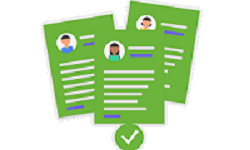

Your newest employee, has been an ex- employee or a student somewhere.
Wouldn't you like to know about your newest hires from their previous employers?
What if we can know our hires before they join us?
With SCANDIDATE, Get a #RealityCheck to #KnowYourHire in just a click!
Well begun is half done - a guiding HR principle for all modern organisations.
Start RIGHT with SCANDIDATE- enabling faster, cost-friendly, more confident hiring decisions.
KYH-Know Your Hire
Recruit RIGHT to stay ahead!

Copyright 2020